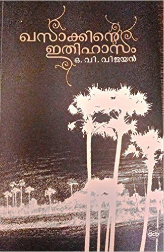
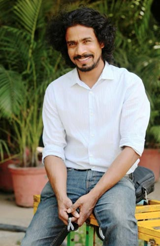

in association with
presents
About
Khasakinte Ithihasam (The Legends of Khasak) penned by OV Vijayan is undoubtedly one of the best and most read novels in Kerala and beyond. This celebrated work uniquely blended the umpteen stories of Thasraak, a remote village in Palakkad where the author had spent a year of his childhood.
Vijayan juxtaposed myriad human experiences of bliss, fantasy, melancholy, poverty, disease, and death in lyrical prose, without pontification or grandstanding—the reason why Khasak is still an epic in literary history. Khasaak’s multilayered reality is also deeply philosophical - an imagery that provides unique perspectives into religion, language, politics, and sex through its fascinating character sketches, almost all of them drawn from the real-life characters that the author had met in Thasraak.
Portraying Khasak into its multidimensional plurality has been a challenge to any medium, to which this theatrical interpretation stands as an exception.
Blue Ocean Theatre and NECAB, in collaboration with several cultural organizations, bring this enchanting experience to Bangalore on the 6th, 7th and 8th of May 2016, at Christ School Ground, Koramangala.
The Drama
This play is a bold and independent adaptation of the famous Malayalam novel Khasakkinte Ithihasam (The Legends of Khasak) by O.V.Vijayan, which acquired the stature of latter-day mythology. The play recreates the imaginary rustic abode of the legendary land Khasak in the background of north Malabar's village shrines where myths and fantasy still merge together to form the still living traditions of yore.
About the Novel
This celebrated work mesmerised the literary enthusiasts by transforming a normal rural story into a magical legendary multi-layered reading experience. The novel changed the space – time imaginations by its profound poetics, knitting of reality and myth, sarcasm, union of carnal desire and existential torment, narrative brilliance, blending of the provincial vocabulary to the body the novel and sublime weaving of sex, guilt and penance.
The novelty of the style and content in Khasaak altered the history of Malayalam literature forever and redefined the literary sensibilities of the average Malayalam reader. Khasaak walked the unconventional path of taking the reader through a fascinating history and the existential crises of a people through the experiences of its protagonist, Ravi and the legends that surround the rural hamlet.
The stories that Khasaak weaves together using the encounter of the spiritual with the scientific and the myths and superstitions that form the history and the reality of the mystic village make it an experience that you want to go through over and over again.
About the Director
Deepan Sivaraman is an Indian Theatre director, Scenographer and Academic. During the last two decades of his theatre career he worked on several productions as a director and scenographer and some of the notable productions have travelled to festivals such as Edinburgh, Avignon, Almeda, ITFOK, BRM and META. He graduated from Central Saint Martin School of Art and Design, London, with a specialization in scenography.
He taught scenography in at University of the Arts, London for six years and is presently an Associate Professor in Ambedkar University, Delhi. Deepan is the founding artistic director of Oxygen Theatre Company based in Thrissur, Kerala. He is also currently associated with Performance Studies Collective - a student initiated experimental theatre group based in Delhi.
Deepan has designed and directed more than more than 60 performances for various companies and academic institutions in India and Europe. His notable works include Lord of the Flies (1997), Kamala (2003), Spinal Cord (2009), Peer Gynt (2010), Ubu Roi (2012), Project Nostalgia (2013), Its Cold in Here (2014), The cabinet of Dr Caligari (2015) and The Legends of Khasak (2015). He has also worked as a scenographer to some of his famous contemporaries like Vivan Sundaram, Anuradha Kapoor and Neelam Mansingh, to name a few.
Organizers
NECAB
NSS Engineering College has been functional for more than 50 years and is situated at Palakkad, Kerala. Its alumni have achieved high degree of success in various fields and is active in various social programs across the globe. NECAB - NSS Engineering College Alumni Bangalore - aims at promoting interaction and networking between its members, supporting art and cultural activities in Bangalore and also helping the deserving through programs aimed at social intervention.
A decade since its inception, NECAB has emerged as one of the most vibrant Alumni Associations in Bangalore. Our bonding has been intrinsic and natural, connected by the common thread that is the Institution that contributed in making us what we are today.
Blue Ocean Theatre
Blue Ocean is a startup theater group, launched by a group of acclaimed film and theater artists with a common vision of offering fine quality theatre experience to the drama lovers around the world. As the name indicates, Blue Ocean’s aim is to explore unchartered waters to deliver a fresh theatre going experience to the audience. Their philosophy is simple: If they enjoy making it, the audience will most certainly enjoy watching it!
The Cause
NECAB and Blue Ocean Theatre aims to present an unparalleled theatre experience to the drama lovers of Bangalore by hosting a classic play in the best possible manner and to raise a significant fund to fund the rehabilitation of Endosulfan affected people of Kasaragod through ENVISAG and for NECAB’s Social Obligation Program that government schools in Bengaluru